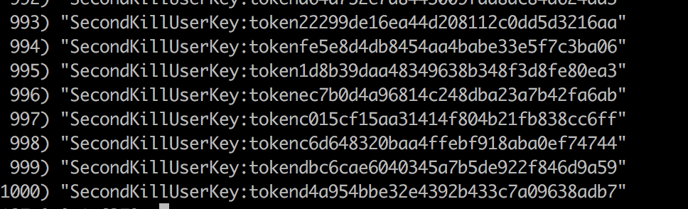
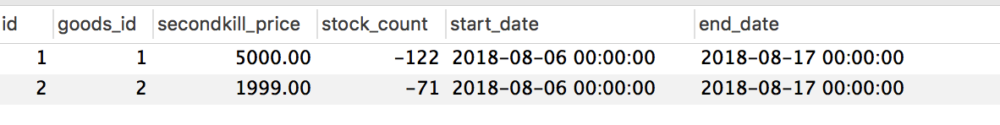

JMeter压测入门
读完这篇文字,你将看到
自定义变量模拟多用户
JMeter命令行使用
Redis压测工具redis-benchmark
文档
用户手册 http://jmeter.apache.org/usermanual/get-started.html
JMeter入门
设置好这个http请求默认值之后,接下来的http请求，这些配置就不需要填写了
如何查看结果呢?
聚合报告很概括的，如果想看详细的 ,选择图形结果，结果树，表格等
右击可以清除某次压测结果
由于我这台MBP是固态硬盘，且性能较高,16G的内存,吞吐量未经优化有400以上，所以我将程序部署到了一台老旧的3G内存,主频1.5GHZ,,机械硬盘的装有Ubuntu系统,且里面已经跑了一个gitlab服务的华硕笔记本上,这台笔记本2010年买的，已经8年了,硬件参数如下

压测数据如下
1000的并发,吞吐率只有24
分析代码,代码如下
@Autowired
GoodsService goodsService;
@RequestMapping("/to_list")
public String toList(Model model, SecondKillUser user){
model.addAttribute("user",user);
//查询商品列表
ArrayList<GoodsVo> goods=goodsService.listGoodsVo();
model.addAttribute("goodsList",goods);
return "goods_list";
}
由于我们没用cookie发送,所以瓶颈不在redis上,应该在数据库上
我在没运行压测之前运行top命令和压测中运行top命令
压测中负载达到了10
把Java应用和数据库分开,下图是该Ubuntu服务器单独承担mysql的压力的截图
JMeter自定义变量
上面我们压测的请求没有带任何参数
我们新建一个Controller
@Controller
@RequestMapping("/user")
public class UserController {
@RequestMapping("/info")
@ResponseBody
public Result<SecondKillUser> info(Model model, SecondKillUser user) {
return Result.success(user);
}
}
我们这个用户可以通过参数token或者cookie token 来从redis中获取
JMeter支持Cookie参数的
我们为了方便直接在参数里面将用户的md5 传入
上面的商品列表不需要压测就禁用
我们将Token从浏览器中复制出来
这个的QPS比上一个请求的要高很多，因为请求的是redis,缓存
于此同时redis和jdbc的配置可以改高点儿
# 连接超时时间
redis.timeout=3
redis.password=root
# 连接池的配置
# 最大连接数
redis.poolMaxTotal=10
# 最大空闲
redis.poolMaxIdle=10
# 最大等待
redis.poolMaxWait=3
spring.datasource.maxActive=2
spring.datasource.initialSize=1
spring.datasource.minIdle=1
改为
# 连接超时时间
redis.timeout=10
redis.password=root
# 连接池的配置
# 最大连接数
redis.poolMaxTotal=1000
# 最大空闲
redis.poolMaxIdle=500
# 最大等待
redis.poolMaxWait=500
#JDBC
spring.datasource.maxActive=1000
spring.datasource.initialSize=100
#最大空闲
spring.datasource.minIdle=500
如果我想模拟多用户请求怎么办呢？
我们建立一个txt文档jmeter_config.txt
13712341234,4997c8aff5054353bbc4acb611f2c38f
...可以多行 意思就是多个用户参数
Recycle on EOF是什么意思呢？ 就是假如测1000个并发，但是只有100个token(用户参数),是否循环使用参数
Stop thread on EOF 到末尾是否停止
Variable Name相当于就是给2列起了名字 ，一个叫userid,一个叫usertoken
这样参数就得改成如下
命令行压测
如果在服务器上进行压测，但是服务器没有图形界面,就采用命令行压测
1在windows/MacOS/Linux上录好jmx
2命令行:sh jmeter.sh -n -t xxx.jmx -l result.jtl -n就是不使用图形界面的意思 -t是指定脚本,-l是输出结果
3把result.jtl导入到JMeter
Redis压测
1 redis-benchmark -h 127.0.0.1 -p 6379 -c 100 -n 100000 100个并发连接，100000个请求
2 redis-benchmark -h 127.0.0.1 -p 6379 -q -d 100 存取大小为100字节的数据包
redis本身提供了压测工具
ps -ef | grep redis
将jmeter软件和导出的jmx配置上传的纯命令行的Linux系统上,执行如下命令
测试期间 cpu负载也上来了
压测结束后将生成的result.jtl导入到带有图形界面的JMeter中
jmx文件下载good_list.jmx
结果文件下载goodslist_result.jtl
秒杀压测
接下来我们批量建立1000个用户的Token ,生成csv文件,使用JMeter中的CSV Data set config元件,来对秒杀接口进行压测
使用这段代码在数据库中生成1000个用户
List<SecondKillUser> users = new ArrayList<SecondKillUser>(count);
//生成用户
for(int i=0;i<count;i++) {
SecondKillUser user = new SecondKillUser();
user.setId(13000000000L+i);
user.setLoginCount(1);
user.setNickname("user"+i);
user.setRegisterDate(new Date());
user.setSalt("1a2b3c");
user.setPassword(MD5Util.inputPass2DBPass("123456", user.getSalt()));
users.add(user);
}//创建的用户除了nickname不一样,其他都一样,比如密码,salt等
System.out.println("create user");
//插入数据库
Connection conn = DBUtil.getConn();
String sql = "insert into secondkill_user(login_count, nickname, register_date, salt, password, id)values(?,?,?,?,?,?)";
PreparedStatement pstmt = conn.prepareStatement(sql);
for(int i=0;i<users.size();i++) {
SecondKillUser user = users.get(i);
pstmt.setInt(1, user.getLoginCount());
pstmt.setString(2, user.getNickname());
pstmt.setTimestamp(3, new Timestamp(user.getRegisterDate().getTime()));
pstmt.setString(4, user.getSalt());
pstmt.setString(5, user.getPassword());
pstmt.setLong(6, user.getId());
pstmt.addBatch();
}
pstmt.executeBatch();
pstmt.close();
conn.close();
System.out.println("insert to db");
使用这段代码生成用户id+Token组成的csv文件 注意，上面的数据库所在的服务器和redis所在的服务器都是我们配置文件里面配置的ip,因为redis缓存和数据库用户都是要插入到这台服务器上的
//登录，生成token
//调我们自己的接口，生成userid和token的csv文件
String urlString = "http://localhost:8088/login/do_login";
File file = new File("/Users/xxxxxx/workspace/JavaWorkSpace/secondkill/tokens.txt");
if(file.exists()) {
file.delete();
}
RandomAccessFile raf = new RandomAccessFile(file, "rw");
file.createNewFile();
raf.seek(0);
for(int i=0;i<users.size();i++) {
SecondKillUser user = users.get(i);
URL url = new URL(urlString);
HttpURLConnection co = (HttpURLConnection)url.openConnection();
co.setRequestMethod("POST");
co.setDoOutput(true);
OutputStream out = co.getOutputStream();
String params = "mobile="+user.getId()+"&password="+MD5Util.inputPassMD5("123456");//拼装参数
out.write(params.getBytes());
out.flush();
InputStream inputStream = co.getInputStream();
ByteArrayOutputStream bout = new ByteArrayOutputStream();
byte buff[] = new byte[1024];
int len = 0;
while((len = inputStream.read(buff)) >= 0) {
bout.write(buff, 0 ,len);
}
inputStream.close();
bout.close();
String response = new String(bout.toByteArray());
JSONObject jo = JSON.parseObject(response);
String token = jo.getString("data");//返回的数据是这样的{"code":0,"msg":null,"data":"fbd690a8f574485e974b585daab160e4"},所以要获取data
System.out.println("create token : " + user.getId());
String row = user.getId()+","+token;//userid+token
raf.seek(raf.length());
raf.write(row.getBytes());
raf.write("\r\n".getBytes());
System.out.println("write to file : " + user.getId());
}
raf.close();
System.out.println("over");
同时redis中也有数据了

我们生成token的csv文件其实就是模拟这1000个用户登陆,然后登陆过程会在redis中保存用户token，同时生成csv文件用于压测工具作为参数传参
数据有了，开始配置JMeter

有这2个参数时因为秒杀接口需要goodsId和token
未压测前的库存
压测中的性能
压测后的库存，超卖了122 ,非常严重 ,要是上线了就亏大了.要是并发量不大，这种问题永远不会暴露出来
秒杀订单
吞吐量
这里我JMeter是跑在我的Mac上的，去测我的Linux机器，所以JMeter并没有影响这台机器的性能，结果还是比较准的
我对第二个商品也进行了秒杀压测，不过这次我把应用和mysql+redis分开放了
应用跑在mac上，请求的mysql和redis在linux机器上

压测前库存
压测后库存

吞吐量 比上面那种方式高了
解决卖超
原来减库存的sql是这样的
@Update("update secondkill_goods set stock_count=stock_count-1 where goods_id=#{id}")
public void reduceStock(SecondKillGoods secondKillGoods);
现在改成
update secondkill_goods set stock_count=stock_count-1 where goods_id=#{id} and stock_count>0
而且原来的代码对于1个用户同时发起多个请求进行秒杀，可能会出现同一个用户秒杀到多次的情况
结论：使用数据库的唯一索引，这也是为什么秒杀表要单拉出一个表的原因
重新压测

没有卖超了
吞吐量
This blog is under a CC BY-NC-SA 3.0 Unported License
本文链接：http://hogwartsrico.github.io/2019/05/21/jmeter/